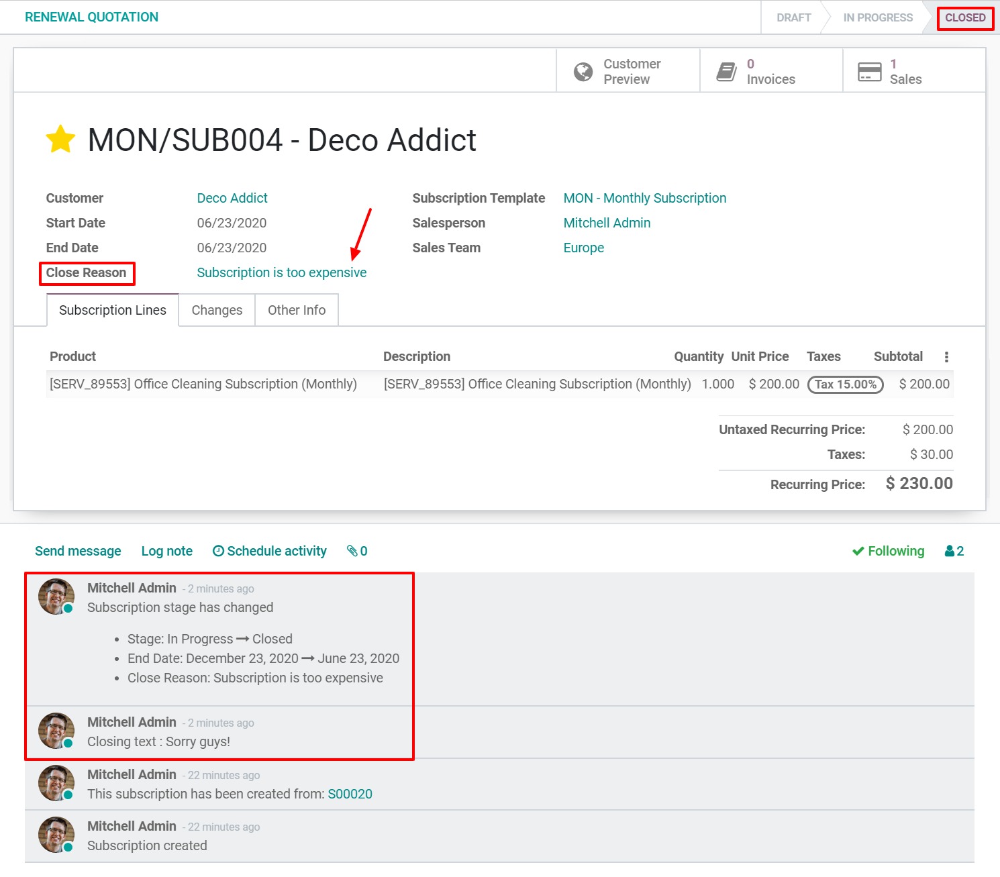

Cancelar una suscripción¶
Perder un cliente siempre es difícil, en especial si suele poner mucho esfuerzo en hacer que se registren a sus productos/servicios. Sin embargo, muchas empresas usan métodos cuestionables para reducir la probabilidad de que esto pase.
Si adopta estos métodos, se encuentra entre las empresas que siembra miedo hacia las suscripciones, sin pensar en el impacto negativo que los clientes insatisfechos podrían tener en su negocio y, que frustran a los clientes de una u otra manera. Sin embargo, en un momento dado, es comprensible que no quiera que sus clientes participen en su estado de suscripción.
Si no adopta estos métodos, se encuentra entre las empresas que siguen evolucionando en un modelo de negocio de suscripción a largo plazo, especialmente en una era de comunicación ultrarrápida entre clientes insatisfechos y los que conservan a sus clientes facilitándoles la salida si lo desean. Al darles la oportunidad de cancelar sus propias suscripciones, sus clientes no se sienten atrapados por haberse suscrito a sus productos/servicios.
En resumen, la aplicación Suscripción de Odoo le da la oportunidad de escoger lo que quiera aplicar. De hecho, usted puede decidir si dar a sus clientes la opción de cancelar sus suscripciones cuando quieran o restringir esta posibilidad. La decisión es suya, aquí mostraremos cómo hacerlo en nuestra increíble aplicación.
Configuración¶
Vaya a . Desde ahí puede crear una nueva Plantilla de suscripción o modificar una existente. Cuando edite su plantilla, tiene la posibilidad de activar la opción Cancelable por el cliente en la pestaña de facturación. Una vez habilitada, sus clientes podrán cancelar sus suscripciones.

Nota
Asegúrese de consultar nuestra documentación sobre cómo Usar plantillas de suscripción para entender por completo la importancia de esta función en un flujo básico utilizando la aplicación Suscripciones de Odoo.
Cancelar su primera suscripción¶
Vista de administrador¶
Una vez que se confirma una cotización, se vuelve una orden de venta y se crea automáticamente una suscripción. Por esta razón el estado de la suscripción es En progreso. Después tendrá la opción de cancelarla.

Al utilizar el botón inteligente Cancelar, tiene que introducir un motivo de cancelación. Por ejemplo, «La suscripción es demasiado cara», «La suscripción no cumple mis requisitos», «La suscripción llegó a su fecha de finalización», etc. Inmediatamente después de confirmar el motivo de cancelación, puede observar que el estado de la suscripción cambió a Cancelada y que el motivo de cancelación se menciona en la suscripción.

Vista del cliente¶
Como se explicó en la sección Vista de administrador, puede visualizar desde el formulario de suscripción lo que verán sus clientes en sus suscripciones haciendo clic en el botón Vista previa del cliente. En este ejemplo, el cliente tiene la opción de cancelar su suscripción cuando quiera hacerlo gracias al botón, Cancelar suscripción.

Si se usa este botón, el cliente podrá especificar la razón por la cual canceló su suscripción e incluso podrá dejar un mensaje.

Al confirmar la cancelación, se redirecciona al cliente a su portal y se informa al administrador de esta modificación. Efectivamente, el estado de la suscripción cambió a Cancelada y aparece una nota en el chatter con la nueva etapa, la fecha de finalización, el motivo de cancelación y el texto de cancelación del cliente.
Nota
Antes de cerrar una suscripción, revise nuestra documentación sobre cómo Crear una cotización usando productos de la suscripción para entender cómo se gestionan las suscripciones en la aplicación Suscripciones de Odoo.